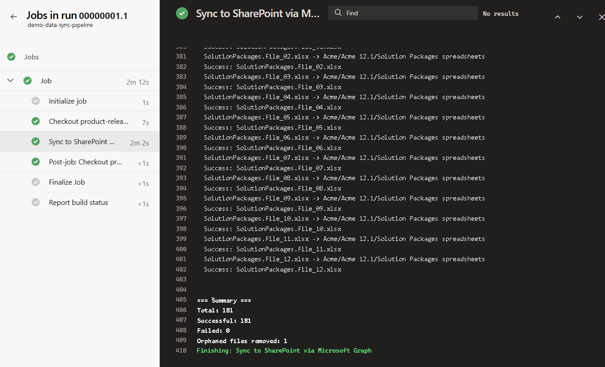

Internal documentation, including release-related Excel files such as new Solution Package descriptions, was being uploaded directly to SharePoint. There was no version control, review process, or link to the work item (user story or bug) behind the change.
I identified this as a governance gap and built a pipeline to address it. Contributors now work in a Git repo on their own branch, with a required reviewer and a linked Azure DevOps work item. Only after changes are merged into main does the pipeline automatically sync the approved content to SharePoint.
SharePoint became a read-only mirror of reviewed content, rather than a place where anyone could edit files directly.
I identified the problem and designed the new documentation workflow, then independently built and maintained the pipeline. I also created a PDF guide for developers explaining the new submission process.
I tested and validated the pipeline from its initial implementation through subsequent troubleshooting. I used AI assistance throughout the project, from building the original pipeline to diagnosing and rebuilding it after Microsoft retired the legacy authentication method it depended on.
The CI/CD pipeline automatically syncs approved changes from the Git repo to SharePoint after they are merged into main.
The pipeline uses a two-phase mirror sync: first, it removes files from SharePoint that no longer exist in the repo; then, it uploads the current set. When Microsoft retired the original authentication method (PnP.PowerShell using Azure ACS), I rebuilt the same sync logic using the Microsoft Graph API.
$spFiles = Get-PnPFolderItem -FolderSiteRelativeUrl $folder -ItemType File
foreach ($spFile in $spFiles) {
$shouldExist = # ... check against local files ...
if (-not $shouldExist) {
Remove-PnPFile -SiteRelativeUrl "$folder/$($spFile.Name)" -Force
}
}$items = Get-GraphFolderContents -DriveId $driveId -FolderPath $folder -Headers $headers
$spFiles = $items | Where-Object { $_.file }
foreach ($spFile in $spFiles) {
$shouldExist = # ... check against local files ...
if (-not $shouldExist) {
$deleteUrl = "https://graph.microsoft.com/v1.0/drives/$driveId/items/$($spFile.id)"
Invoke-RestMethod -Method Delete -Uri $deleteUrl -Headers $headers
}
}To submit a release-related file, a contributor creates a branch linked to the relevant Azure DevOps work item, opens a pull request, addresses any review feedback, and merges the changes. The pipeline then syncs the approved file to SharePoint automatically — no manual upload or separate publishing step.
Documentation changes now go through review and are traceable to a work item before reaching SharePoint, replacing the previous process of uploading files directly with no version control or review.
